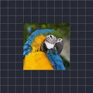

Pulse na Laki

Paulit-ulit na pinapalaki at pinapaliit ang layer, sa sine o triangle wave.
Paulit-ulit na pinalalaki at pinaliliit ng Pulse na Laki ang layer. Ang Paliitin at Palakihin ang pinakamaliit at pinakamalaking laki bilang multiple ng normal (ang 0.9 ay 90 %), ang Dalas ay ang bilang ng pintig bawat segundo at ang Alon ay Sine (makinis) o Tatsulok. Karaniwang gamit ang tibok ng puso o logo na sabay sa beat. Tingnan din ang Pulse na Opacity.
Mga Setting
| Setting | Uri | Saklaw | Default |
|---|---|---|---|
| Dalas | Numero | 0 Hz hanggang 16 Hz | 2 Hz |
| Paliitin | Numero | 0 hanggang 1 | 0.9 |
| Palakihin | Numero | 1 hanggang 2 | 1.1 |
| Panimulang Phase | Numero | 0 hanggang 2 | 0 |
| Alon | Pagpipilian | Sine, Tatsulok | Sine |
| Estilo | Pagpipilian | Klasiko, Karaniwan, Karaniwan | Klasiko |